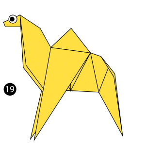
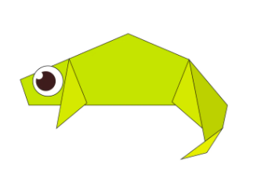
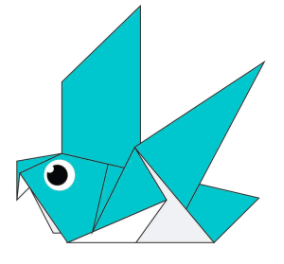
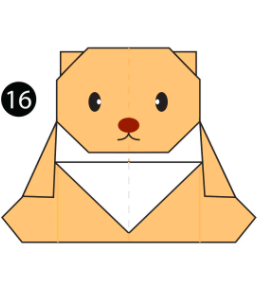
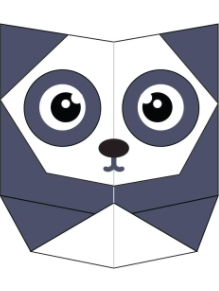
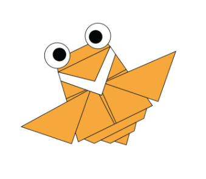

Origami Designs
Learn about animal origami and features about these animals!!
Click on the image to see the origami
Fun Facts About camel

A)Camels can move easily across the sand because of their special feet that consists of two toes. Those toes spread when they touch the ground which prevents the camels from sinking in the sand.
B)The eyes of a camel have three eyelids and two rows of eyelashes that prevent sand from entering their eyes.
C)When they find water, they will drink as much as possible. Also, they can drink up to 40 gallons of water at once.
D)You might have seen camels with thick fur, and the coat reflects the sun so that the camels don’t get too hot.
Fun Facts About Chameleons

A)Chameleons are a very unique branch of the lizard group of reptiles.
B)Chameleons live in warm varied habitats from rainforests through to deserts.
C)Chameleons actual eyesight is great they can see small insects 5-10 meters away. They can also see in both visible and ultraviolet light.
D)Chameleons usually eat large insects such as locusts, grasshoppers, crickets, and stick insects, some bigger species also eat other lizards and young birds.
Fun Fcats About Bird

A)The oldest bird ever known to humans lived about 150 million years ago during the Jurassic Period. Known as Archaeopteryx, this magnificent bird was a size of Raven.
B)Birds like dove, parakeets, and lovebirds which are kept as pets love to stay in pairs for companionship. On the other hand flamingos pair for a lifetime and some of them stay with their mates for more than 50 years. Awwww!!
C)Scientists have believed that Birds have evolved from theropod dinosaurs. This is just amazing, don’t you think?
D)Birds are supposed to have a complicated and efficient pair of lungs and take up more space than humans or any other mammals.
Fun Facts About Teddy Bear

A)Do you know what to call a person who is too fond of or loves collecting teddy bears? – Arctophile, which combines the Greek words arctos (bear) and philos (loving/fond of).
B)The first toy bear is believed to be made by German toy maker Margarete Steiff in 1902 that was a jointed, stuffed one.
C)The first British Teddy Bear Festival was held in 1989 in London.
D)American multi-billionaire investor Paul Greenwood owned the largest collection of teddy bears.
Fun Facts About Panda

A)It is believed that pandas roamed the earth as early as three million years ago.
B)There are two main types of pandas – the giant black-and-white panda and the Red Panda.
C)Red Pandas resemble the raccoon family. They are typically reddish-brown in color and they grow to about two feet and only weigh up to 12 pounds. They are mostly found in China, Burma, and India.
D) Most newborn pandas die from diseases or because the mother panda accidentally crushes them.
Fun Facts About Flying Cicada

A)There are about 3,000 known species of cicadas worldwide.
B)A cicada’s eye color can be blue, red or white.
C)Cicadas are separated into two classifications, annual cicadas and periodic cicadas.
D)Cicada species vary in size, between 0.75 of an inch and 2.25 inches.
About me